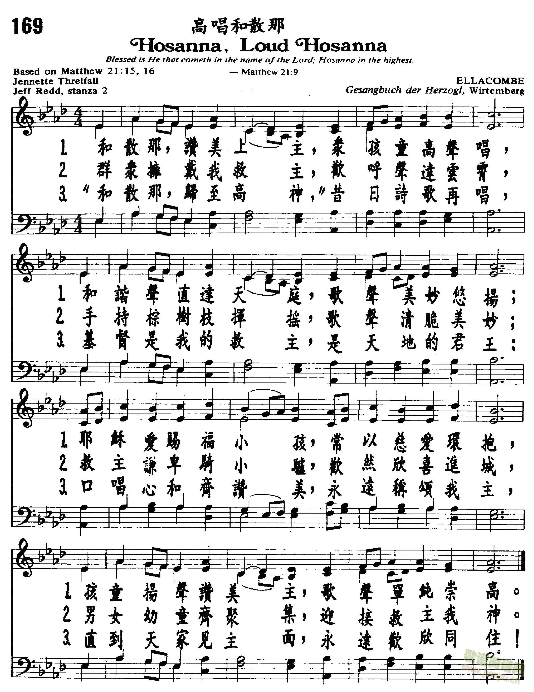

0145 0197 Hosanna, Loud Hosanna _Jennette
Threlfall 唱和撒那 ▲ ELLACOMBE
| 簡介
Hosanna, Loud Hosanna |
| The opening two stanzas narrate the
first Palm Sunday in the past tense, but the third stanza shifts to the
present tense to emphasize what current singers do and believe. The
repeated elements in this anonymous German tune suggest the repetitive
patterns in a crowd’s chant. |
|
|
|
|
1 Hosanna, loud hosanna
the little children sang;
through pillared court and temple
the lovely anthem rang.
To Jesus, who had blessed them,
close folded to his breast,
the children sang their praises,
the simplest and the best.
2 From Olivet they followed
mid an exultant crowd,
the victory palm branch waving,
and chanting clear and loud.
The Lord of earth and heaven
rode on in lowly state,
nor scorned that little children
should on his bidding wait.
3 "Hosanna in the highest!"
That ancient song we sing,
for Christ is our Redeemer,
the Lord of heaven, our King.
O may we ever praise him
with heart and life and voice,
and in his blissful presence
eternally rejoice.
Psalter Hymnal
|
1
唱“和散那！和散那！”儿童齐声歌唱，
在宏伟美丽殿中，圣诗声音悠扬。
耶稣曾祝福他们，紧抱在祂胸膛，
孩童所唱赞美诗，简单意义深长。
2
他们自橄榄山麓，跟随欢乐群众，
挥动胜利棕树枝，高声歌唱赞颂。
世人，天使的主宰，谦卑骑驴驹上，
并不轻视小儿童，接纳他们欢唱。
3
“和散那归至高神”我们仍唱此歌，
基督是我们救主，我王，天上的主。
我们当永远赞祂，以心以行以声，
在主喜乐面光中，永远欢欣不停。 |
|

http://www.jianpu.cn/img/h/h2/h1xcoid9h2.jpg
 |
| |
|
https://vinemedia.org/bible-spirituality/hymn/hymn-hosanna-loud-hosanna/
https://www.tcaccma.org/mp3/HymnsOfLife3/519_Hosanna_LoudHosanna.mp3
Notes
Published in a chapel
hymnal for the Duke of Würtemberg (Gesangbuch der Herzogl,
1784), ELLACOMBE (the name of a village in Devonshire, England) was first
set to the words "Ave Maria, klarer und lichter Morgenstern." During the
first half of the nineteenth century various German hymnals altered the
tune. Since ELLACOMBE's inclusion in the 1868 Appendix to Hymns
Ancient and Modern, where it was set to John Daniell's children's
hymn "Come, Sing with Holy Gladness," its use throughout the
English-speaking world has spread.
ELLACOMBE is a rounded bar
form (AABA), rather cheerful in character, and easily sung in harmony. Try
having a soloist sing the story in stanzas 1 and 2, with the children (or
entire congregation) joining in on stanza 3.
--Psalter Hymnal
Handbook, 1998
Music: Ellacombe Gesangbuch
der Herzogl. Wirtembergischen Katholischen Hofkapelle (Württemberg,
Germany: 1784).
Adapted & harmonized by William
H. Monk in the 1868 appendix to Hymns
Ancient and Modern, number 366 (🔊 
 ).
).

https://hymnary.org/text/hosanna_loud_hosanna_the_little_children
Notes
Scripture References:
st. 1-3 = Matt. 21:1-17, Mark 11:1-10, Luke 19:28-38, John 12:12-13
Like "All Glory, Laud, and
Honor" (375/376), this text is based on Christ's triumphal entry on Palm
Sunday. However, "Hosanna, Loud Hosanna" focuses more on the children's role
in that event. The text was written by Jeannette Threlfall (b. Blackburn,
Lancashire, England, 1821; d. Westminster, London, 1880) in an "idle moment"
(as she says she wrote all of her hymns, all others of which have been
forgotten). Undoubtedly, Threlfall had Mark 11 in mind when she wrote this
text, but she also alludes to Jesus' welcoming of the children in Mark
10:13-16. Stanzas 1 and 2 tell how the children shared in the songs during
Christ's procession into Jerusalem. Stanza 3 is our cue to participate in
praising our Redeemer.
Threlfall's life was
extremely difficult: she was orphaned at an early age, and two serious
accidents caused her to be an invalid for life. But she bore her misfortune
with grace and fortitude and maintained a ministry to many people who came
in contact with her. Threlfall wrote devotional verse, which was published
anonymously in various periodicals and later collected in Woodsorrel,
or Leaves from a Retired Home (1856) and Sunshine and Shadow (1873),
which included "Hosanna, Loud Hosanna."
Liturgical Use:
Palm Sunday, in conjunction with the Palm Sunday gospel reading or the
children's message.
--Psalter Hymnal
Handbook
There was a video that went viral a few years ago of a four-year-old girl
looking in the mirror and exclaiming how much she loved everything in her life.
I suspect it went viral because of its infectious positivity and the reminder
that we could all use some child-like enthusiasm and gratitude. If we still need
this message today, it means we have forgotten in part the beautiful story of
Jesus welcoming the children unto him. Those children were able, more than the
adults, to receive the Kingdom of Heaven like a gift, with unquestioning joy and
gratitude.
Jeannette Threlfall reminds us of that joy in her hymn, “Hosanna, Loud Hosanna.”
She imagines those children running throughout the city, bursting with
excitement and love for Jesus; a simple, undignified, giddy kind of love. As we
raise our own “Hosannas,” we are called and invited to do so with the same
exuberance and joy as these children who praised the One who first loved them.
Text:
Jeannette Threlfall said that she often wrote her hymns in an “idle moment” (Psalter
Hymnal Handbook). Of all her hymn texts and poems, this is the only one
still sung. Almost every modern hymnal contains the same three verses, but those
verses have all changed over time. Today’s second verse is made up of the
original second half of verse two, and the first half of the original verse
three. Her text mainly relates the events of Christ’s triumphant entry into
Jerusalem, but it also alludes to Mark 10:13-16, where Jesus welcomes the little
children to come to Him, pointing more starkly to the kind of King that Jesus
was and is.
Tune:
Almost across the board, Threlfall’s text is set to the much-loved tune
ELLACOMBE. This tune was first written for the Duke of Wurtemberg and published
in a chapel hymnal in 1784. It’s now the accompanying tune for a number of
hymns, but is most often sung with “Hosanna, Loud Hosanna.” This is a simple
song to teach children for a processional, and to sing in harmony.
Since this hymn is almost always sung on Palm Sunday, one option that might mix
things up is to use the tune ST. THEODULPH, the tune for “All Glory, Laud, and
Honor.” Both of these hymns are often sung on Palm Sunday; if you sing one at
the beginning and one at the end of the service, using the same tune creates
nice bookends for your time of worship.
When/Why/How:
This Palm Sunday hymn is fitting both as a processional and as a hymn of
response to the Gospel reading. If used as a processional, it would be difficult
to have the children sing and walk with palm branches at the same time, but if
it’s sung at a different point in the service, consider having a children’s
choir sing either the entire hymn or the first verse with the congregation
coming in on verse two. Again, note the depth of the message in Threlfall’s
hymn. By alluding to the story of Jesus welcoming the little children, she both
demonstrates what kind of King Jesus is, and what kind of worship we ought to
bring before Him. Christ, who loves the helpless and the innocent, asks for our
simple, undignified, joyful praise. Consider writing a prayer of confession that
expresses our failure at humbling ourselves to the point of undignified love and
worship, and asking Christ to give us hearts like those of children. You could
then sing this hymn as a response of assurance and dedication.

https://www.hymnologyarchive.com/hosanna-loud-hosanna
with ELLACOMBE
I. Text: Origins
Among the poems of Jennette Threlfall (1821–1880), this is the only one still in
common use, and it has served its purpose well as a hymn for Palm Sunday. The
text was first published in her collection Sunhine and Shadow (London: William
Hunt & Company, 1873 | Fig. 1), in four stanzas of eight lines, without music.
In her brief preface, Threlfall offered a glimpse of her motivation for writing
poems:
Some of the pieces are specially written for children, others for those upon
whom life’s shadows have fallen. The author’s wish for all is that they may
possess the Sunshine which brings no shadow with it.
The author’s wishes seem to have been a reflection of her own life experience.
In 1899, the Rev. John Brownlie said of her:
Her life was a clouded one. She early lost both parents and found a home with
relatives, carrying with her brightness and joy, despite her sorrow and
suffering. These were due partly to accidents she met with, by which she was
maimed and rendered an invalid for life.[1]
Threlfall’s collection also featured an introduction by Christopher Wordsworth
(1807–1885), bishop of Lincoln, and skilled poet in his own right. He was glad
to recommend the poems, “in which considerable mental powers and graces of
composition are blended with pure religious feeling, and hallowed by sound
doctrine and fervent devotion.”
View fullsize
Threlfall-SunshineShadow-1873-49.jpg
View fullsize
Fig. 1. Sunhine and Shadow (London: William Hunt & Company, 1873).
Fig. 1. Sunhine and Shadow (London: William Hunt & Company, 1873).
II. Text: Analysis
This hymn, at its most foundational level, draws from the story of the triumphal
entry, found in Matthew 21, Mark 11, Luke 19, and John 12, except Threlfall has
shifted the initial focus to the participation of children. This focus is not
mentioned specifically in the Scripture text, but it follows a long tradition of
children participating in Palm Sunday processions. In the famed processional
hymn by Theodulf of Orléans, his hymn “Gloria laus et honor” was headed by the
instruction “Verses made to be sung by boys on the day of palms” [“Versus facti
a pueris in die palmarum cantarentur”], and this idea was carried out in many
liturgical traditions. Threlfall’s line “To Jesus who had blessed them” and the
last two lines of stanza three are a reference to Matthew 19:13–15 and its
parallels in Mark 10:13–16 and Luke 18:15–17. In the second stanza, the
inclusion of angels and “Glory to God on high” is apparently an allusion to Luke
2:14. In the third stanza, the reference to the ancient city of Salem is meant
to reflect the historical equation of this place with Jerusalem (see Genesis
14:18, Psalm 76:2, Hebrews 7:1–2).
III. Tune
Threlfall’s hymn was initially popularized in part through its inclusion in the
Scottish Church Hymnary (1898 | Fig. 2), a successful hymnal, revised and
updated in four editions through 2005. In this collection, her hymn was paired
with the German tune ELLACOMBE, a pairing of great endurance. The tune supports
the grand, celebratory nature of the text. This harmonization is nearly
identical to the one in Hymns Ancient & Modern (1868, see Fig. 6 below), except
in the second measure of the first, second, and fourth lines.

View fullsize
ELLACOMBE-ChurchHymnary1898_001a.jpg
View fullsize
Fig. 2. The Church Hymnary (Glasgow: Henry Frowde, 1898).
Fig. 2. The Church Hymnary (Glasgow: Henry Frowde, 1898).
ELLACOMBE is sometimes credited as first appearing in an appendix to Gesang-Buch
nebst angehängtem öffentlichen Gebethe zum Gebrauche der Herzogl.
Wirtembergischen katholischen Hofkapelle (1784 | Fig. 3), but this tune only
shares a few series of notes with ELLACOMBE and should not be regarded as the
same tune.

View fullsize
Fig. 3. Gesang-Buch nebst angehängtem öffentlichen Gebethe zum Gebrauche der
Herzogl. Wirtembergischen katholischen Hofkapelle (1784), reproduced in
Historical Companion to Hymns Ancient & Modern (1962).
Fig. 3. Gesang-Buch nebst angehängtem öffentlichen Gebethe zum Gebrauche der
Herzogl. Wirtembergischen katholischen Hofkapelle (1784), reproduced in
Historical Companion to Hymns Ancient & Modern (1962).
Wilhelm Bäumker (1842–1905), in Das katholische deutsche Kirchenlied, vol. 4
(1911, completed posthumously by Joseph Gotzen), no. 145, pp. 533–536 (HathiTrust),
published five variants of the ELLACOMBE tune, the earliest being a version set
to the text “Im Himmel und auf Erden,” said to be in a manuscript of the early
nineteenth century, in the possession of A. Feigel, a schoolteacher in Altwasser.
The current location of this MS is unknown.
The earliest printed source is Xaver Ludwig Hartig’s Vollstandige⸗Sammlung der
gewöhnlichen Melodien zum Mainzer⸗Gesangbuche (Mainz: Franz Zimmermann, ca. 1827
| Fig. 4), no. 89, set to the text “Der du im heilgsten Sacrament.” This source
is often cited as 1833, but Lutheran hymnologist Joe Herl made the following
observations regarding the proper dating:
There is no publication date in the source, but the preface refers the reader to
“Cäciliaheft No 8 2 Band,” which appeared in 1825; and the title of source 3
[Die Melodien des Gesang⸗Buches für die Diözes Mainz nach Herrn Hartigs
“Vollständiger Sammlung” zum Gebrauch für Schulen; see below], published in
1829, refers to Hartig’s book, so the book cannot have been published before
1825 or after 1829. In addition, the Yale University copy of Hartig’s book has a
review of it by G. Otto from an unidentified periodical inserted after the front
flyleaf; the review is dated “M[ainz] — im Julius 1827,” which means the book
very likely appeared in 1826 or early in 1827.[2]
In this early version, notice especially the melodic endings of the phrases,
with the first two phrases repeated, yielding a form of AABBA.

View fullsize
Fig. 4. Vollstandige⸗Sammlung der gewöhnlichen Melodien zum Mainzer⸗Gesangbuche
(Mainz: Franz Zimmermann, ca. 1827).
Fig. 4. Vollstandige⸗Sammlung der gewöhnlichen Melodien zum Mainzer⸗Gesangbuche
(Mainz: Franz Zimmermann, ca. 1827).
The next earliest source, derived from Hartig’s work, is Die Melodien des Gesang⸗Buches
für die Diözes Mainz nach Herrn Hartigs “Vollständiger Sammlung” zum Gebrauch
für Schulen in Ziffern mit unterlegtem Texte (Mainz: Zimmermann, 1829 | Fig. 5),
no. 89. The last part of the title describes the nature of the contents: “for
use by schools, in numbers, with text underneath.” Hartig’s melody is repeated
here, except replaced by numbers representing scale degrees, for the purpose of
music training. This collection is also important for dating the melody; it has
to be earlier than 1829.

View fullsize
Fig. 5. Die Melodien des Gesang⸗Buches für die Diözes Mainz nach Herrn Hartigs
“Vollständiger Sammlung” zum Gebrauch für Schulen in Ziffern mit unterlegtem
Texte (Mainz: Zimmermann, 1829).
Fig. 5. Die Melodien des Gesang⸗Buches für die Diözes Mainz nach Herrn Hartigs
“Vollständiger Sammlung” zum Gebrauch für Schulen in Ziffern mit unterlegtem
Texte (Mainz: Zimmermann, 1829).
The German melody is sometimes also associated with the text “Ave Maria, klarer
und lichter Morgenstern,” an association traced to Kirchenchoral und
Melodien-Buch (Köln, 1844), as noted by Bäumker, p. 535.
This melody was adopted into English hymnody through its appearance in the
Appendix to Hymns Ancient & Modern (1868 | Fig. 6), where it was set to the text
“Come, sing with holy gladness” by John J. Daniell (1819–1898). The tune was
named ELLACOMBE, probably a reference to the district in Devonshire, England, or
to the English vicar Henry Thomas Ellacombe (1790–1885), who was from
Devonshire, or both.

View fullsize
IMG_0327b.jpg
View fullsize
Fig. 6. Hymns Ancient & Modern with Appendix (London: William Clowes &
Sons, 1868).
Fig. 6. Hymns Ancient & Modern with Appendix (London: William Clowes & Sons,
1868).
This version of the tune, when compared to the German versions in Bäumker,
differs in the omission of the repeats, with each phrase having its own melodic
ending, therefore granting the tune a little more interest with less verbatim
repetition. In the 1868 edition of Hymns Ancient & Modern, the music and the
harmonization were credited in the index as being from “St. Gall. Katholisches
Gesangbuch.” This is most likely a reference to Katholisches Gesangbuch mit
einem Anhang von Gebeten zum Gebrauche bei dem öffentlichen Gottesdienste (St.
Gallen, A.J. Köppel, 1863 | Fig. 7), where the tune appeared as no. 132, set to
the text “Johannes auserkoren,” a song for the commemoration of John the
Baptist.

KatholischesGesangbuch-StGallen-1863-281.jpg
KatholischesGesangbuch-StGallen-1863-282.jpg
KatholischesGesangbuch-StGallen-1863-283.jpg
Fig. 7. Katholisches Gesangbuch mit einem Anhang von Gebeten zum Gebrauche bei
dem öffentlichen Gottesdienste (St. Gallen, A.J. Köppel, 1863).
The 1863 arrangement is nearly identical to what appeared in HA&M in 1868,
except at the end of the third full phrase, where the German form has repeated
the first part of that phrase, while the English form has effectively eliminated
the last syllable for the purpose of the meter. This small change was probably
made by HA&M’s musical editor William H. Monk. Many hymnological sources credit
the whole arrangement to Monk, but proper credit goes to the St. Gallen
collection, with Monk as alterer.
ELLACOMBE is frequently associated with other texts, including “The day of
resurrection,” a translation by J.M. Neale from the Greek text of John of
Damascus, and “I sing th’ almighty power of God” by Isaac Watts.
by CHRIS FENNER
for Hymnology Archive
20 March 2019
Footnotes:
Rev. John Brownlie, “Jennette Threlfall,” The Hymns and Hymn Writers of the
Church Hymnary (London: Henry Frowde, 1899), p. 275.
Joe Herl, “ELLACOMBE,” Companion to the Lutheran Service Book (2019).
Related Resources:
A.B. Grosart, “Jeanette Threlfall,” ed. John Julian, A Dictionary of Hymnology
(London, 1892), pp. 1171–1172.
William Cowan & James Love, “ELLACOMBE,” The Music of the Church Hymnary
(Glasgow: Henry Frowde, 1901), p. 51.
Maurice Frost, “The day of resurrection!” Historical Companion to Hymns Ancient
& Modern (London: William Clowes & Sons, 1962), pp. 212–213.
Marilyn Kay Sulken, “O day of rest and gladness,” Hymnal Companion to the
Lutheran Book of Worship (Philadelphia: Fortress Press, 1981), pp. 325–326.
Louis Weil & Morgan Simmons, “ELLACOMBE,” The Hymnal 1982 Companion, vol. 3A
(NY: Church Hymnal Corp., 1994), no. 210.
Bert Polman, “Hosanna, loud hosanna,” Psalter Hymnal Handbook (Grand Rapids: CRC,
1998), p. 534.
Paul Westermeyer, “ELLACOMBE,” Hymnal Companion to Evangelical Lutheran Worship
(Minneapolis: Augsburg Fortress, 2010), pp. 166–167.
Carl P. Daw Jr. “Hosanna, loud hosanna,” Glory to God: A Companion (Louisville:
Westminster John Knox, 2016), p. 200.
J.R. Watson, “Hosanna, loud hosanna,” Canterbury Dictionary of Hymnology:
http://www.hymnology.co.uk/h/hosanna,-loud-hosanna
“Hosanna, loud hosanna,” Hymnary.org:
https://hymnary.org/text/hosanna_loud_hosanna_the_little_children
https://www.umcdiscipleship.org/articles/history-of-hymns-hosanna-loud-hosanna
BY DENISE MAKINSON
Stock choir holding hands
“Hosanna, Loud Hosanna”
by Jenette Threlfall
The United Methodist Hymnal, 278
Hosanna, loud hosanna,
the little children sang;
through pillared court and temple
the lovely anthem rang.
To Jesus, who had blessed them
close folded to his breast,
the children sang their praises,
the simplest and the best.
A very large crowd spread their cloaks on the road, while others cut branches
from the trees and spread them on the road. The crowds that went ahead of him
and those that followed shouted,“Hosanna to the Son of David!”“Blessed is he
who comes in the name of the Lord!”“Hosanna in the highest heaven!” When Jesus
entered Jerusalem, the whole city was stirred and asked, “Who is this?” The
crowds answered, “This is Jesus, the prophet from Nazareth in Galilee.” - (Matt
21:8-11, NIV*)
Can you picture the excitement of this scene? Jesus enters Jerusalem on a donkey
with crowds of people shouting “Hosanna.” Matthew also tells us that the
children were shouting “Hosanna” in the temple (Matt. 21:15, NIV). Jeanette
Threlfall (1821-1880) envisioned this celebration, especially the role the
children played. Her hymn “Hosanna, Loud Hosanna” begins with the children
singing and a reminder that Jesus welcomed and blessed the children throughout
his ministry.
Miss Threlfall had a difficult childhood. She was born in Blackburn, England, to
Henry Threlfall and Catherine Eccles, but both her parents died at an early age.
Following her parents’ deaths, she was raised by her aunt and uncle and then
lived with other relatives throughout her life. Two serious accidents left her
first lame and then severely disabled, confining her to her bed (Watson, n.p.).
Despite these circumstances, accounts of her life indicate that Miss Threlfall
was always cheerful and loved to write poems and hymns. She wrote this prayer to
the Source of her strength: “O Loving Father, give Thy poor child strength! Thou
knowest she has none: O loving Father, give her strength to say, “Thy Will Be
Done!” (Morgan, 2010, n.p.) Threlfall must have loved to imagine the children
running and shouting “Hosanna” and being welcomed into the arms of Jesus.
Threlfall’s poems were published in two volumes, Woodsorrel: Leaves from a
Retired Home (1856) and Sunshine and Shadow (1873). “Hosanna, Loud Hosanna,”
appearing first in Sunshine and Shadow, was then paired with the hymn tune
ELLACOMBE and included in the Scottish Church Hymnary (1898). This was a
successful hymnal that was revised and updated in four editions through 2005.
Her original poem had four stanzas.
In addition to stanza one cited above, the original second and third stanzas
follow:
From Olivet they followed,
‘Midst an exultant crowd,
The victor palm branch waving,
And shouting clear and loud;
Bright angels joined the chorus
Beyond the cloudless sky,
“Hosanna in the highest:
Glory to God on high!”
Fair leaves of silvery olive
They strewed upon the ground,
Whilst Salem’s circling mountains
Echoed the joyous sound;
The Lord of men and angels
Rode on in lowly state,
Nor scorned that little children
Should on His bidding wait. (Threlfall, 1873, pp. 50-51)
Current hymnals condense the second and third stanzas into one and modify the
text in a few places, a common editorial practice. This conflation appears as
follows in The United Methodist Hymnal:
From Olivet they followed,
mid an exultant crowd,
the victor palm branch waving,
And chanting clear and loud;
The Lord of earth and heaven
rode on in lowly state,
nor scorned that little children
should on his bidding wait.
In the three stanza version included in The United Methodist Hymnal,
“the first two stanzas narrate the story of Christ’s entry into Jerusalem in the
past tense, while the final stanza shifts to the present tense to call attention
to the actions and the hope of the singers of the hymn” (Daw, 2016, p. 200).
The importance of children throughout Jesus’ ministry was lifted up throughout
Miss Threlfall’s poem and helps us develop our own understanding about children
in regard to our ministry today. In stanza one, the children sing in the temple,
following Jesus’ entry into the city (Matt. 21:15). It is possible that these
children are the same ones that Jesus blessed earlier in Matthew’s account when
he said, “Suffer little children, and forbid them not, to come unto me: for of
such is the kingdom of heaven.” (Matt. 19:13-14, KJV). The unpretentious and
authentic praise of children illustrates the childlike faith that Jesus demands
of those who follow him (Matt. 18:1-4). Jesus welcomed the praise of children
(Matt 21:16) quoting Psalm 2:1-2 (NIV), “…through the praise of children and
infants…”. Do we invite the voices of children in our worship today and help
them feel welcome? How can children teach us to better share our faith and
proclaim praise to God our Savior?
“Hosanna, Loud Hosanna” is most often sung to the hymn tune ELLACOMBE. The tune
first appeared in the Gesangbuch der Herzogl, Wirtembergischen katholischen
Hofkapelle [Songbook of the Catholic chapel of the Württemburg ducal court,
Württemberg, 1784]. The composer of this tune is unknown, but it was first
harmonized by Victorian university professor and composer William Henry Monk
(1823-1889). There is some speculation that the tune name honors Henry Thomas
Ellacombe (1790-1885), “a campanologist [specialist in bell ringing] and
Anglican clergyman, who devised an apparatus (now named for him) that allows one
person to achieve the effect of several change ringers” (Daw, 2016, pp. 35-36).
Because the first five notes of this tune resemble several bell patterns, it
suggests the association with Ellacombe. Monk was also known to have named
several other hymn tunes for his contemporaries. The repeated patterns of the
tune echo the repetitive chant of the crowd as Jesus rode into Jerusalem.
As we commemorate Palm Sunday in our worship services today, we remember the
drama of the first crowd that gathered to shout “Hosanna” and hail Jesus as king
as he entered Jerusalem. Miss Threlfall reminds us that we also look to the day
when Jesus enters the new Jerusalem, where white-robed multitudes will again
take up their palms, shouting: “Salvation belongs to our God who sits on the
throne, and to the Lamb!” (Rev. 7:9-10 NIV).
The final stanza follows as it appears in The United Methodist Hymnal:
“Hosanna in the highest!”
that ancient song we sing,
for Christ is our Redeemer,
the Lord of heaven our King.
O may we ever praise him
with heart and life and voice,
and in his blissful presence
eternally rejoice!
SOURCES
Carl P. Daw Jr., Glory to God: A Companion (Westminster John Knox Press;
Louisville, KY, 2016).
Chris Fenner, “Hosanna Loud Hosanna” Hymnology Archive website.
https://www.hymnologyarchive.com/hosanna-loud-hosanna Accessed January
17, 2020.
Robert J. Morgan, Near to the Heart of God: Meditations on 366 Best-loved Hymns
(Revell Pub.: Grand Rapids, MI, 2010). Devotion for Nov. 30.
Jeanette Threlfall, Sunshine and Shadow, Poems (London: William Hunt and
Company, 1873).
https://archive.org/details/sunshineandshad00thregoog/page/n48 . Accessed on
January 22, 2020.
J.R. Watson, “Hosanna, Loud hosanna,” Canterbury Dictionary of Hymnology.
http://www.hymnology.co.uk/h/hosanna,-loud-hosanna. Accessed on January 22,
2020.
*Verses marked NIV are from the New International Version (NIV) Holy Bible, New
International Version®, NIV® Copyright ©1973, 1978, 1984, 2011 by Biblica, Inc.®
Used by permission. All rights reserved worldwide.
https://en.wikipedia.org/wiki/Jeanette_Threlfall
From Wikipedia, the free encyclopedia
|
Jeanette Threlfall
|
|
Born |
24 March 1821
Blackburn, Lancashire, England |
|
Died |
30 November 1880 (aged 59) |
|
Resting place |
Highgate Cemetery |
|
Pen name |
J. T. |
|
Occupation |
hymnwriter, poet |
|
Language |
English |
|
Nationality |
British |
|
Genre |
hymns, religious poetry |
|
Subject |
Christianity |
|
Notable works |
"Hosanna! loud hosanna" |
Jeanette Threlfall (pen
name, J. T.; 24 March 1821 – 30 November 1880) was an English hymnwriter of
the Victorian
era and author of other sacred poems. She published Woodsorrel,
1856; The Babe and the Princess, 1864; Sunshine and Shadow,
1873; and two little prose works.
Threlfall was brought up by an uncle and
other relatives as her parents died when she was young. Suffering from
poor health during the greater part of her life served to deepen her
spiritual faith, and gave her time to write hymns.
Her literary and religious accomplishment were lauded after her death in
1880, by such authorities as Dean Arthur
Penrhyn Stanley, Dean Frederic
Farrar, and Bishop Christopher
Wordsworth. "We praise Thee in the morning" may be taken as a specimen
of her style, while her Palm
Sunday hymn, "Hosanna! loud hosanna", was very popular with children.
Early years and
education[edit]
Jeanette Threlfall was born in Blackburn,
Lancashire, on 24 March 1821. She was the daughter of Henry Threlfall,
wine merchant, and Catherine Eccles, the latter a somewhat noticeable
local family, who disapproved of the marriage.
Orphaned early in life, she became the
"beloved inmate" (as a memorial-card bears) of the households successively
of her uncle and aunt Bannister and Mary Jane Eccles, at Park Place,
Blackburn, and Golden Hill, Leyland,
Lancashire; and later of their daughter, Sarah Alice Aston, and her
husband, of Dean's
Yard, Westminster.
From about twelve years of age, her
education was left to itself, but her great love of reading, combined with
delicate health, prevented this from being a great disadvantage.
Threlfall worked as a Sunday school teacher. Throughout
her life, she was a great reader, and made time to write sacred poems and
hymns. These were sent anonymously to various periodicals. They were first
collected and issued in a small volume, entitled Woodsorrel; or, Leaves
from a Retired Home, by J. T., (London:
J. Nisbet, 1856).[a] The
thirty-five poems in the volume did not appear to gain any notice except
among friends. In 1873, she selected fifteen pieces from Woodsorrel and
added 55 others, and published them as Sunshine and Shadow. Poems by
Jeannette Threlfall. With Introduction by the Lord Bishop of Lincoln
(Wordsworth) (London: Hunt). A
third edition (1880) was entitled New Edition. With In Memoriam from
the Sermons of the Dean of Westminster and Canon Farrar. The two
memorial tributes were characterized as very tender and sweet.
Of Threlfall's hymns, those in collection
include:— 1. Hosanna! loud hosanna, The little children sang. (Palm
Sunday) 2. I think of Thee, O Saviour. (Good
Friday). 3. Lo, to us a child is born. (Christmas).
4. Thou bidd'st us seek Thee early. (Early Piety.)
5. We praise Thee in the morning. (Morning.) 6. When from
Egypt's house of bondage. (Children as Pilgrims.) These hymns are all
taken from Threlfall's Sunshine and Shadow, 1873. I think of
Thee, O Saviourwas written during an illness, at her dictation, by a
friend. Hosanna! loud hosanna, The little children sang was the
most widely used of her compositions.
In 1877, Threlfall
slipped during a carriage accident. The injuries led to a leg amputation. A
second accident rendered her a helpless invalid. She bore her sufferings
well, retaining a positive attitude till her death, 30 November 1880.
Threlfall was interred at Highgate
Cemetery, 4 December 1880.
Themes and reception[edit]
In Julian (1892) it is remarked that "[her]
sacred poems are not very well wrought, nor at all noticeable in thought
or sentiment. But all through one feels that a sweet spirit utters
itself."
Remarks by Stanley included:—
“If I may speak of one who has been taken from
these precincts within the last week: when a life, bright and lovely in
itself, is suddenly darkened by some terrible accident; when it has been
changed from the enjoyment of everything to the enjoyment of nothing;
when year by year, and week by week, the suffering, the weakness, have
increased; and when yet, in spite of this, the patient sufferer has
become the centre of the household, the adviser and counsellor of each;
when there has been a constant stream of cheerfulness under the severest
pain; when there has been a flow of gratitude for any act of kindness,
however slight; when we recall the eager hope of such an one, that
progress and improvement, not stagnation or repose, will be the destiny
of the newly-awakened soul; then, when the end has come, we feel more
than ever that the future is greater than the present.”
Remarks by Farrar included:—
“A few days ago there passed away a resident of
this Parish, a member of this congregation, whose name many of the poor
well know; who was their friend and their benefactor: who had the
liberal hand and the large heart; who helped the charities of this
parish with a spontaneous generosity which is extremely rare; whose
purse was ever open, unasked, to every good work of which she heard;
whose delicate mind was alive with Christian sympathy; who had
pre-eminently “‘The faith, through constant watching wise, And the heart
at leisure from itself, To soothe and sympathise.’”
Bishop Wordsworth praised her poems, and
observed:—
“It is an occasion for great thankfulness to be
able to point to poems, such as many of those in the present volume, in
which considerable mental powers and graces of composition are blended
with pure religious feeling, and hallowed by sound doctrine and fervent
devotion.”
"Hosanna! loud hosanna!"
(hymn)
"Hosanna! loud
hosanna!
The little children sang:
Through pillared court and temple
The lovely anthem rang;
To Jesus, who had blessed them,
Close folded to His breast,
The children sang their praises,
The simplest and the best."
Of Threlfall's "Hosanna! loud hosanna" (Matth.
xxi. 15.), listed as a Whitsuntide hymn
in Home Words (1868), Frances
Ridley Havergal commented in 1881, that it "has become in the fullest
sense a standard hymn. It is one of the brightest and most graceful hymns
for the little ones that can adorn any collection".
-
^ According to Julian
(1892), the title, Woodsorrel, was chosen from its name in
Italian “Alleluia,” and because Fra
Angelico puts it, with daisies, at the foot of the Cross in one
of his paintings.
{kind=link}